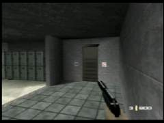
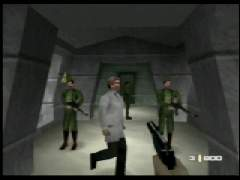
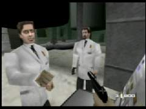
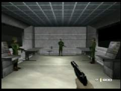
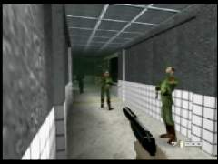
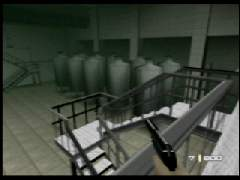
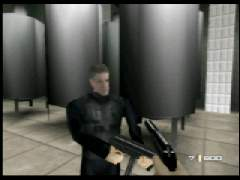

|
| Soluce
Goldeneye : Facility |
Niveau
très agréable, bien réaliste. On découvre
les Scientifiques, et le Niveau est plus subtil que le Barrage. Des
Cartes, Un Décodeur, un Agent Double, Trevelyan, Oroumov, des
Explosions, du Gaz , ce Niveau est un des Meilleurs ! Le Code est bien
dur à avoir aussi... Gaffe au KF7 Soviet, qui rameute tout le
monde ! Silencieux de rigueur, sauf si vous voulez tout foutre en l'air,
ce qui est sympa aussi ! |


Continuez au fond à Gauche et vous trouverez un Garde casqué qui a une Carte. Flinguez-le dans le Dos et vous pourrez désormais ouvrir la Porte Blindée qui renferme un Ordinateur bien utile. faites le tour du propriétaire, nettoyez tout, et une fois celà fait (au Silencieux bien sur) allez vers la Porte Blindée. Tuez les 3 Gardes dedans, et actionnez l'Ordinateur. Il va ouvrir une Porte pendant un certain temps. On peut voir cette Porte à travers la Vitre Blindée. Ouvrez la Porte et tracez vers celle que vous avez ouverte. Vous accedez à la 2eme Partie de Facility. Note - En Mode Agent, ya un Gilet sur des Caisses dans le Couloir Principal. Si vous attendez LONGTEMPS dans les Toilettes, un Scientifique va se pointer en courant. Il a sur lui une Carte (A) qui ouvre TOUTES les Portes de Facility, sauf celle du Décodeur à la fin. Utile à savoir, mais long à attendre... |



Vous etes dans la Seconde Partie de Facility à présent. Nettoyez bien les Lieux. Attention aux 3 Gardes juste après la Porte qui s'ouvre vite (Photo ci-dessus au Milieu) et aux Scientifiques qui pourraient débouler en pleine Action ! |
| Contacter
l'Agent Double : Secret Agent / 00 Agent |
Ci-dessous, voilà Dr. Doak. C'est lui, l'Agent double. Il a sur lui le Décodeur qui vous ouvrira la Dernière Salle. Dr. Doak est TRES lourd. Pourquoi ? On le trouve toujours dans une salle différente quand on recommence le Niveau ! Vous pouvez le choper au début ( Photo de Gauche ci-dessous, avec la Barbe) comme tout à la Fin du Niveau. En fait c'est chiant pour essayer d'avoir le Code, car on a pas le temps de visiter le Niveau à la recherche de ce satané Doak ! |



Dr. Doak vous remettra le Décodeur. Pas la peine de lui causer des plombes. Dès qu'il vous a vu de près, on file. C'est dans la Poche. Continuez toujours tout droit et vous arrivez à une intersection (Photo de Milieu ci-dessus). A Droite, le Chemin mène à une Salle remplie de Futs de Gaz (vous aurez une surprise si vous en explosez un) tandis qu'a Gauche, on arrive à la 3eme Partie de Facility, le Labo. Sur la Photo de Droite ci-dessous, vous remarquerez le Scientifique qui court. C'est lui qui a la Carte A qui ouvre tout sauf la Dernière Porte. Pour ouvrir chacune des 2 Portes menant à ces 2 endroits, cliquez les Ordinateurs. Il y a un autre Gilet au fond de la Salle aux 2 Ordinateurs, si vous etes en Agent. |


| Penetrer
dans le Labo : Tous Niveaux |
Continuez tranquillement votre Chemin (c'est à dire en tuant presque tout ce que vous voulez sauf les Scientifiques) et vous arriverez fatalemment à la Porte Blindée ci-dessous à Droite où il faut le Décodeur. Utilisez-le (pas besoin en Agent) et vous arriverez dans la Salle aux Reservoirs. Parlez à Alec. |



| Rendez-vous
avec 006 : Tous Niveaux |


| Détruire
les Reservoirs : Tous Niveaux |
Placez une Mine sur chaque Réservoir, mais ceux de derrière ! Placez-les de sorte à ce que les Mines fassent face au reservoir juste devant elle. Comme çà une Mine explosera 2 Reservoirs à la Fois. Plus rapide et efficace. Vous pouvez aussi ruiner les Reservoirs à la Main, mais c'est plus long (KF7 Soviet). Faites bien peter les Reservoirs quand Trevelyan a fini son Speech. Des Gardes vont arriver, çà va etre le boxon, et c'est le moment de filer ! Vous pouvez vous sauver par 2 Issues, la Porte Grise au fond, ou la Tapis roulant qui roule pas. C'est fini pour Facility ! |